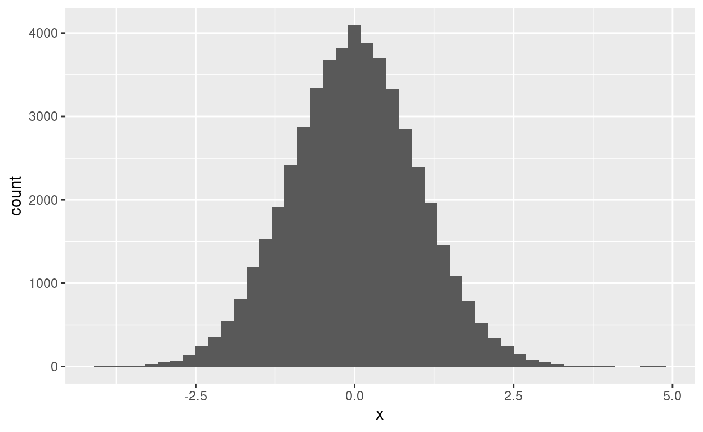

Distributions
This tutorial is a very brief introduction to the basics of statistical tests. It is rapid succession of complex concepts, it is okay and maybe expected to not understand parts of it. The aim is to get some intuition how statistical tests work.
A probability distribution tells us how likely different events (combinations of outcomes) occurs. For instance, the probability to roll a \(4\) using a dice is \(1/6\). The event combining the outcome of rolling a \(2\) and the outcome of rolling a \(4\), that is either a \(2\) or a \(4\) (or the impossible event of rolling both), is therefore \(1/6+1/6=2/6=1/3\). Hence, we assign an event ({4} or {2,4}) a number between 0 and 1, that symbols the probability with which the event happens. This function is written as \(P(event)\), e.g. \(P(\)dice shows 2\()=1/6\).
We can further simplify the handling of random process, such as rolling a dice, by introducing the concept of random variables. Random variables are functions that link an event to a number that we then can use for calculations. For instance, we call \(X\) the number that we roll with a dice, that is \(X=1,2,...\). We can then calculate a probability such as \(P(X>3)\). Or we flip a coin and assign 0 to heads and 1 to tails: \(X(heads)=0\) and \(X(tails)=1\) . We then have for instance \(P(X=1)=P(tails)=1/2\).
In this tutorial, we will use probability distributions to simulate data. Besides understanding statistical theory, we can also use simulations to make sure a that a statistical process that we design works as intended.
A dice
We start by simulating a perfect dice, that is the numbers 1, 2, …, 6
are rolled with equal probability. The function
sample(x, size) takes a sample from the vector
x of size size. Click several times on Run
Code to see different simulations.
x1 <- 1:6 # This is the same as x1 <- c(1,2,3,4,5,6)
sample(x = x1, size = 3) [1] 4 2 3R uses algorithms to simulate randomness. If we want to repeat the
same simulation, we have to initiate the randomness algorithm by setting
a seed using the function set.seed(seed). This will start
our algorithm at the same place each time (Think of a radio playlist
based on a song on Spotify/Youtube/…).
As usual, you can find more details for the function typing
?set.seed() or ?sample. Again, click Run code
several times to see different simulations.
set.seed(1)
sample(x1,3)
sample(x1,3)
set.seed(1)
sample(x1,3)Continous distributions
The dice was an example for a discrete distribution, that is with discrete (“seperate”) outcomes. Another category of distributions are continuous distributions such as the ‘continuous uniform distribution’ shown below.
Here, the uniform distribution is set for the interval from \(1\) to \(3\). When we draw a number from this distribution, then the number is equally likely to come from any interval of the same size between \(1\) und \(3\). For instance, with probability \(0.25\) we draw a number between \(1.1\) and \(1.6\). Or, with our random variable notation: \(P(1.1<X<1.6)=P(X>1.1)\) and \(P(X<1.6)=0.25\). The same probability applies to the interval \(1.3\) to \(1.8\). The probability for any interval outside of \(1\) to \(3\) is \(0\), therefore, the number is drawn from the interval between \(-5\) and \(0.5\) with probability \(0\), or with probability \(0.25\) from the interval \(-5\) to \(1.5\).
The function in the next box illustrates the uniform distribution. It plots the uniform distribution for the interval \(1\) to \(3\) and calculates the probability for any upper and lower limit. The probabilities correspond to the surface under the density function of the probability distribution, that is the share of the box from 1 to 3 with height 1/5. Change the numbers below to see different probabilities.
uniform_1_3(1.1, 1.3)runif(n, min = 0, max = 1) to draw
samples of size n from a uniform distribution between
min and max. 0 and 1 are the default options
as shown. Simulate a sample of size 50 and call the vector
sample_a. Calculate the mean of sample_a.
sample_a <- runif(50,1,3)
mean(sample_a) # or sum(sample_a)/length(sample_a)Sampling
A typical statistical approach is to estimate a parameter of a population (e.g. the mean or median). Let’s assume we want to know the average height in Limerick (parameter: the average). One approach is to select a random sample of people from Limerick and use their height to estimate the average height of everyone (an unknown parameter). In thew following we start by taking a sample to estimate a known parameter. We then calculate the average to see how accurate how our estimate is from a drawn sample.
The following graph shows the distribution from which we draw our sample. We use a so called Poisson distribution with a mean of 170 to represent the height distribution rounded to nearest centimeter.
We now use the function rpois(n, lambda) to draw samples
of size n from a Poisson distribution with mean and
variance lambda. A random variable with a Poisson
distribution with the mean \(\lambda\)
is denoted as \(X \sim
Pois(\lambda)\).
Draw a sample of size 10 from a Poisson distribution with lambda =
170. What is the sample average? We initiate the randomness logarithm
with set.seed(42) for repeatability.
set.seed(42)set.seed(42)
sample_b <- rpois(10,170)
mean(sample_b)The Law of Large Numbers
The Law of Large Numbers tells us that the sample average approaches
the true mean when the sample size becomes very large. Simulate and save
six sample of different sizes: \(n= 100,
n=1000, n=10 000, n=100 000, n=1 000 000\) and \(n=10 000 000\). Then save the average/mean
of each sample. Start by setting set.seed(1).
set.seed(1)
sample_1 <- rpois(100,170)
sample_2 <- rpois(1000,170)
sample_3 <- rpois(10000,170)
sample_4 <- rpois(100000,170)
sample_5 <- rpois(1000000,170)
sample_6 <- rpois(10000000,170)
averages <- c(mean(sample_1),
mean(sample_2),
mean(sample_3),
mean(sample_4),
mean(sample_5),
mean(sample_6)
)
## alternatively: averages <- sapply(2:7, function(x) mean(rpois(10^x,170)))
averagesWe want to see how far we are away from the true mean for each
sample. Calculate the distance to 170 and plot the result together with
sample size below. One option is the function plot(x,y).
x are coordinates on the x-axis andyare the
y-coordinates. For instance plot(c(1,2), c(5,3)) plots the
two points (1,5) and (2,3).
You can call the vector averages from the last box
in here.
distance <- 170 - averages
plot(2:7,distance)
abline(h=0)Estimating the mean house price in Limerick
Assume we observe only a random subset or sample of the property transactions in Limerick. We will see how this affects our mean price estimate.
head(limerick_property_df)We use the function summary to calculate some statistics
for a quick overview of the price distribution in Limerick.
summary(limerick_property_df$price)Next we will draw samples of different sizes, calculate the sample mean, and the rounded distance to the true mean.
# initiate algorithm
set.seed(42)
# draw samples
sample_1 <- sample(limerick_property_df$price, size =10, replace=TRUE)
sample_2 <- sample(limerick_property_df$price, size =50, replace=TRUE)
sample_3 <- sample(limerick_property_df$price, size =100, replace=TRUE)
sample_4 <- sample(limerick_property_df$price, size =1000, replace=TRUE)
sample_5 <- sample(limerick_property_df$price, size =10000, replace=TRUE)
sample_6 <- sample(limerick_property_df$price, size =100000, replace=TRUE)
# calculate averages
averages <- c(mean(sample_1),
mean(sample_2),
mean(sample_3),
mean(sample_4),
mean(sample_5),
mean(sample_6)
)
# print averages
averages
# print distance to true mean
round(averages - mean(limerick_property_df$price))Cental Limit Theorem
Are we actually close?
To understand how reliable our estimation is, we need to know something about the variability or precision of our estimate.There are different ways to analyse the variability. One method, the bootstrap1, is to redraw the sample with replacement to see how our estimate changes, if some of the observation appear multiple times or drop out, that is receive more or less weight.
The method we discuss here is based on a fundamental result of statistic, the Central Limit Theorem. The result uses the average squared deviation from the mean \(\mu\) as a measure of variation which is called the variance: \(\frac{\sum_{i=1}^n (x_i-\mu)^2}{n}\).
- The Central Limit Theorem tells us that a sum of independent random variables (such as repeatedly drawing from the same population of property prices) will approximately follow a distribution called the normal or Gauss distribution. The averages we calculated before are such a sum (\(\frac{1}{n} \sum_{i=1}^n x_i\)). While we divide the sum by \(n\), this just influences the scale of the variance of the sum, not the fundamental shape of the distribution. A special form of the normal is plotted in the graph below, the standard normal distribution with mean 0 and variance (and standard deviation) of 1. If a random variable \(Z\) follows a standard normal distribution we write this as \(Z \sim N(0,1)\) or more generally for a normal distributed \(X\) with mean \(\mu\) and variance \(\sigma^2\) as \(X \sim N(\mu,\sigma^2)\).
- In particular, the Central Limit Theorem tells us that the averages of samples taken from a population2 follow a normal distribution around the true population mean and with the variance of the population divided by sample size. Therefore, with sample size \(n\), and mean \(\mu\) and variance \(\sigma^2\) of the original populations the sample average \(\bar{X_n}\) follows a normal distribution centred around the population mean \(\mu\) with variance \(\frac{\sigma^2}{n}\): \(\bar{X_n} \sim N(\mu,\frac{\sigma^2}{n})\).
Let us consider the discrete Poisson distribution again. To see how the sample average follows approximately a normal distribution, we repeatedly draw samples of size 100 and calcualte the average.
We use the function replicate(n, expr) to simulate the
n times repeated draw that takes place in expr
(expression). Specifically, we iteratively execute two operations within
expr: First, we draw a sample from a Poisson distribution
with mean 170 of size 100. Then we calculate the average of the sample.
For readability, we first define these two operations as a function that
we then call within replicate. Last, we save the output
from replicate as a vector.
set.seed(1) # initiate random algorithm
sample_average_function <- function(sampleSize, lambda){ # create a function inside curly brackets
sample_average <- rpois(n=sampleSize, lambda=lambda) |>
mean()
return(sample_average)
}
averages <- replicate(n=50000, sample_average_function(sampleSize=100, lambda = 170) )
summary(averages)We now want to inspect the distribution of the averages. We first plot the distribution of the sample averages below
We see that the sample averages are mostly close to the true population mean of 170 in a distribution that resembles the normal distribution at first glance.3 With a larger sample than 100, this similarity would be even greater. We also note that the distribution is much more narrow around 170 than the original Poisson distribution shown in the last chapter.
Alternatively, we can also directly inspect the difference to the
true mean, that we know in this case to be 170. The figure below shows
the difference between the sample averages and the true mean, that is
averages - 170.
As you can see, all we did is move the distribution of sample averages to the left by 170. Therefore, this distribution is centred around 0.
The Central Limit Theorem tells us that the averages have a variance of \(\frac{\sigma^2}{n}\). Here, the population variance \(\sigma^2\) was 170 and we had a sample size of \(n=100\). Therefore, the variance of the averages is \(170/100=1.7\) or its square root or standard deviation is \(\sigma=\sqrt{1.7}\). For the sampling distribution, this standard deviation is called the standard error.
Next we divide the differences of the sample averages to the true
mean by the standard error, that is we divide \(\bar{X}_n - 170\) by \(\sqrt{\frac{\sigma^2}{n}}\), or, in R,
(averages-170)/sqrt(1.7).
This distribution is shown in the figure below and we can see that the distribution now resembles the standard normal distribution shown above.

In fact, subtracting the true mean and dividing by the standard error is called to standardise the sample distribution (https://en.wikipedia.org/wiki/Standard_score). Before easy access to computers, this allowed to look up probabilities for a well-known distribution that then can be linked back to the original distribution by reversing the standardising process.4 We will see now how this works.
Say, we observe a sample average of \(\bar{X} = 167\) and size \(n=100\). Also, we assume we do not know whether this sample was drawn from the same population/distribution as the other averages calculated before. We can now calculate the probability that the true population mean was indeed 170 by considering how likely it is to observe a sample average as small as 167 from a sample distribution centred around \(170\) with variance \(170/100=1.7\).
If we want to use the standardising route, we first have to
‘translate’ our distance from the scale and variance of the sample
distribution with the true distribution (\(N(170, 1.7)\)) to a standard normal
distribution (\(N(0, 1)\)). Therefore,
we subtract 170 and divide the difference by \(\sqrt{1.7}\): \(\frac{167-170}{\sqrt{1.7}}=-2.3\). The
probability that a standard normal distribution is smaller than a number
a, can be calculated using the function
pnorm(a), i.e. \(P(Z<a)\). This probability is called the
p-value, how likely is it to observe the sample outcome given some
assumed distribution. You can already see in the plot of the standard
normal distribution at the top of this chapter, that the probability is
low.
a <- (167-170) / sqrt(170/100)
pnorm(a)Alternatively, we could have calculated this probability directly in R by specifying mean and standard deviation (standard error).
pnorm(167, mean=170, sd=sqrt(1.7))Finally, let us compare this calculated probability to the share of observed sample averages that are smaller than 167. We can also calculate probabilties for other values of course.
# share of sample averages that are smaller than 167 (empirical probability)
mean(averages<167)
# theoretical probability to observe a sample average smaller than 167
pnorm(167, mean=170, sd=sqrt(1.7))
# Same for 169
mean(averages<169)
pnorm(169, mean=170, sd=sqrt(1.7))We conclude that our theoretical probabilities to observe a specific sample average given an assumed distribution are pretty accurate when compared to simulated sample averages from this distribution.
Therefore, based on one observed sample average, we can test
hypotheses such as ‘The average height in Limerick is 170 centimeters or
higher’. If you want to test the hypothesis that the they are larger
than 175 centimeters, all you have to do is to change the number. If you
want to test the hypothesis that the they are smaller than say 160
centimeters, you just have to calculate the inverse of
pnorm(a,mean,sd): 1-pnorm(a,mean,sd) or
pnorm(a,mean,sd, lower.tail=FALSE).
From the expression ‘Pull Yourself Up By Your Bootstraps’ as we estimate the variability by only remixing our sample.↩︎
Instead of a population, you can also assume they come from the same data generating process and therefore follow the same distribution.↩︎
We will never reach a full normal distribution with our sample averages drawn from the non-negative Poisson distribution as the normal distribution has positive probabilities for all intervals from minus infinity to infinity. However, we do get closer as the sample becomes larger.↩︎
The problem is that the normal distribution has no integral and probabilities can therefore not easily be calculated unlike e.g. for the uniform distribution.↩︎
The t-Test
Student’s t-distribution
One complication is that we typically do not want to test a hypothesis that specifies a mean and a variance at the same time. If we reject the hypothesis we do not know whether it was due to the mean or variance. Therefore, we would just assume the mean height for instance and then estimate the variance based on our sample. As this introduces slightly more variation in the estimate, we have to adjust our theoretical sampling distribution slightly (use a different command in R).
This adjustment is named after the pseudonym ‘Student’ used by William Sealy Gosset, a chemist and brewer for Guinness, when describing the adjustment process.
Below, we first estimate the variance and average for a sample and then compare this to the true mean of 170.
set.seed(1)
sample_pois <- rpois(n=100, lambda=170) # take a sample of 100 as before
sample_sd <- var(sample_pois) # calculate the sample variance
cat('Sample variance: ', sample_var, # output the sample variance
', true value is: ', 170) # compare to true value
sample_avg <- mean(sample_pois) # calculate the sample average
cat('Sample average: ', sample_avg, # output the sample average
', true value is: ', 170) # compare to true valueWe can then calculate the same statistics as in the last chapter
using the t-distribution. Note the function pt() takes an
argument ‘degrees of freedom’ that is the number of observations minus
one observation ‘lost’ for estimation of the variance.
Say we observe a sample average of 170.71 from a now unknown distribution. The sample size is 100. What is the probability that the true mean is 170 or smaller?
set.seed(42)
sample_pois <- rpois(n=100, lambda=170) # take sample
# Calculate sample average and standard deviation
sample_avg <- mean(sample_pois) # 170.71
sample_var <- var(sample_pois) # 159.5211
# calculate test statistic t-score (standardised difference to true mean) under assumption of true mean = 170
t_score <- (sample_avg-170)/sqrt(sample_var/100)
cat('t-score: ', t_score) # 0.5621462
# probability to observe 0.5621462 or higher in a t-distribution with 100-1=99 degrees of freedom
cat('Probability to observe 170.71 or higher\nif the true mean is 170: ',
pt(t_score, df=100-1, lower.tail = FALSE)
)As this is method is common to test hypotheses as stated above, R has
a function called t.test() that implements these steps
directly. Compare the output to our calculations above.
set.seed(42)
sample_pois <- rpois(n=100, lambda=170) # take sample
# Calculate probability that true mean is 170 based on sample
t.test(sample_pois, mu=170, alternative = 'greater')